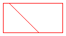

Clipping involves restricting drawing to a certain region. The following illustration shows the string "Hello" clipped to a heart-shaped region.
Regions can be constructed from paths, and paths can contain the outlines of strings, so you can use outlined text for clipping. The following illustration shows a set of concentric ellipses clipped to the interior of a string of text.
To draw with clipping, create a Graphics object, call its SetClip method, and then call the drawing methods of that same Graphics object. The following example draws a line that is clipped to a rectangular region.
Region myRegion(Rect(20, 30, 100, 50));
myGraphics.DrawRectangle(&myPen, 20, 30, 100, 50);
myGraphics.SetClip(&myRegion, CombineModeReplace);
myGraphics.DrawLine(&myPen, 0, 0, 200, 200);
The following illustration shows the rectangular region along with the clipped line.

Â
Â